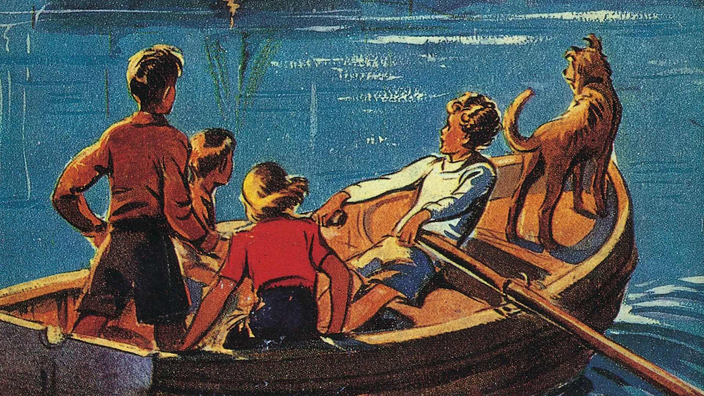

The Famous Five is a series of children's adventure novels and short stories written by English author Enid Blyton.
The first book, Five on a Treasure Island, was published in 1942.
The novels feature the adventures of a group of young children - Julian, Dick, Anne, Georgina (George) and her dog Timmy.
The vast majority of the stories take place in the children's school holidays.
Each time they meet they get caught up in an adventure, often involving criminals or lost treasure.
Sometimes the scene is set close to George's family home at Kirrin Cottage, such as the picturesque Kirrin Island, owned by George and her family in Kirrin Bay, George's own home and various other houses the children visit or stay in are hundreds of years old and often contain secret passages or smugglers' tunnels.
The Five:
Julian is the oldest of the five, cousin to George and elder brother to Dick and Anne. He is tall, strong and intelligent as well as caring, responsible and kind.
Dick has a cheeky sense of humour, but is also dependable and kind in nature.Though inclined to tease his sister at times, Dick is, like Julian, very caring towards Anne and does his best to keep her cheered up when she gets upset.
Georgina is a tomboy, demanding that people call her George, and she cuts her hair very short and dresses like a boy. She is headstrong and courageous by nature and, like her father, scientist Quentin Kirrin, has a hot and fiery temper.
Anne is the youngest in the group, and generally takes care of the domestic duties during the Five's various camping holidays. As the youngest, she is more likely than the others to be frightened, and does not really enjoy the adventures as much as the others.She likes doing the domestic things such as planning, organizing and preparing meals, and keeping where they are staying clean and tidy, be it a cave, house, tent or caravan.
Timothy Alias Timmy is George's faithful dog. He is a large, brown mongrel with a long tail. George adopted him after finding him abandoned on the moors as a puppy. He is very friendly; he is clever, affectionate and loyal to the children and to George in particular; he provides physical protection for them many times. Timmy's presence is frequently given as the reason the children's parents allow them to wander unsupervised.
Click here to see the books in order